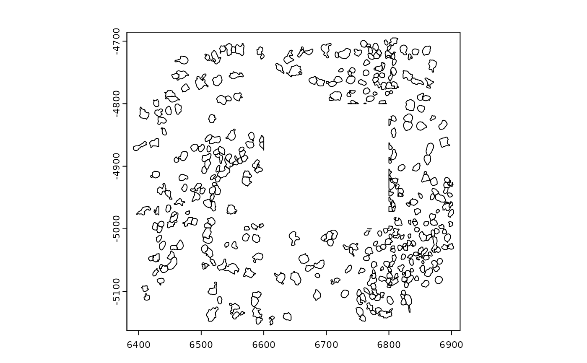
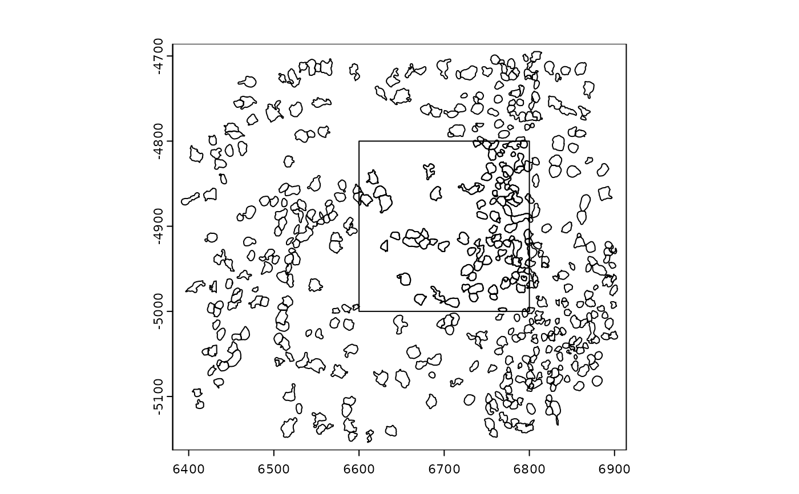
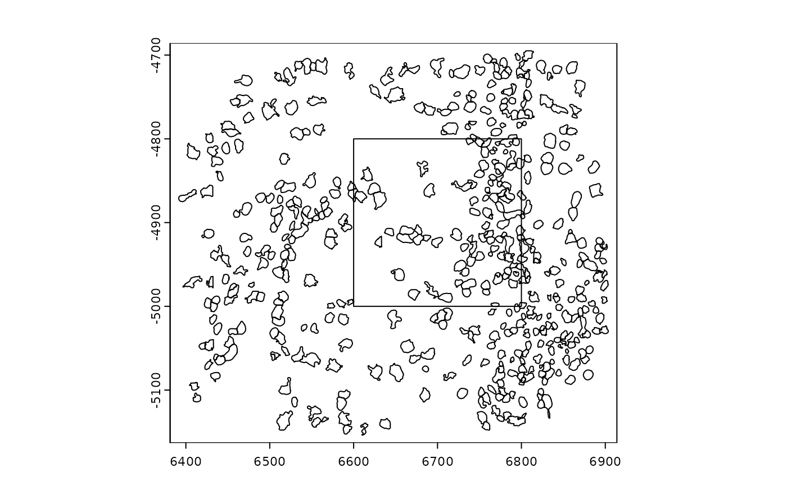
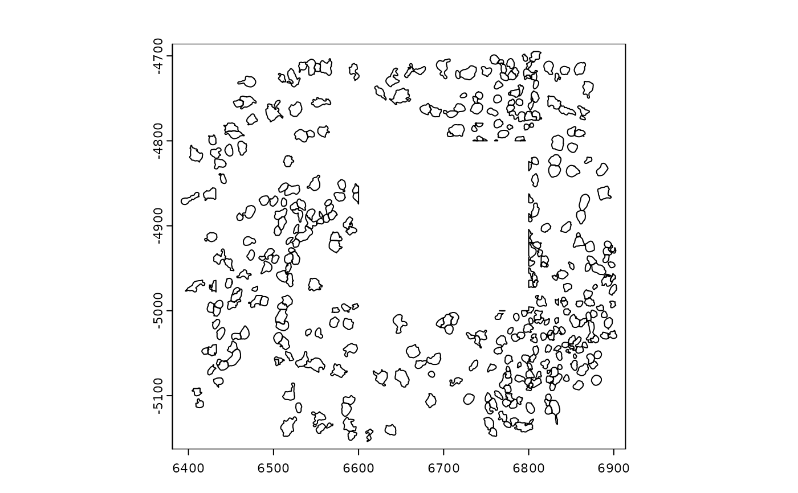
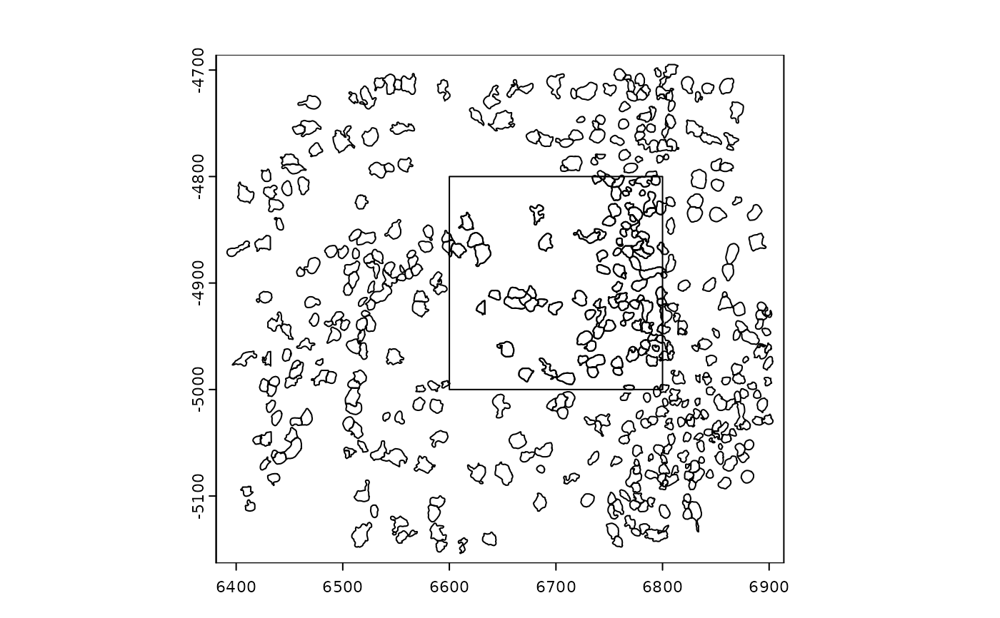
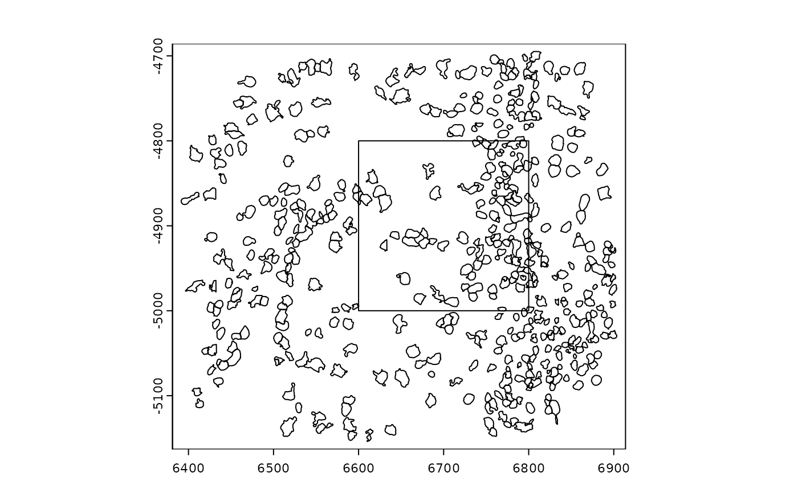

Perform geometric binary operations on Giotto spatial classes
(giottoPolygon, giottoPoints and spatLocsObj) and underlying
representations (only terra SpatVector right now.)
Usage
# S4 methods for giottoPolygon, giottoPoints, spatLocsObj, SpatVector #
# S4 method for class 'spatialClasses,spatialClasses'
erase(x, y, ...)
# S4 method for class 'giottoSpatial'
snap(x, y = NULL, tolerance, ...)
# S4 method for class 'spatialClasses,spatialClasses'
symdif(x, y, ...)
# S4 method for class 'spatialClasses,spatialClasses'
union(x, y)
# S4 method for class 'spatialClasses,spatialClasses'
intersect(x, y)Examples
gpoly1 <- GiottoData::loadSubObjectMini("giottoPolygon")
epoly <- as.polygons(ext(c(6600, 6800, -5000, -4800)))
gpoly2 <- spatShift(gpoly1, dx = 20)
plot(gpoly1)
 plot(union(gpoly1, gpoly2))
plot(union(gpoly1, gpoly2))
 plot(erase(gpoly1, epoly))

plot(union(gpoly1, epoly))

plot(symdif(gpoly1, epoly))

plot(intersect(gpoly1, epoly))
if (FALSE) {
# takes a long time so don't run in checks
plot(snap(gpoly1, tolerance = 0.2))
}
plot(erase(gpoly1, epoly))

plot(union(gpoly1, epoly))

plot(symdif(gpoly1, epoly))

plot(intersect(gpoly1, epoly))
if (FALSE) {
# takes a long time so don't run in checks
plot(snap(gpoly1, tolerance = 0.2))
}